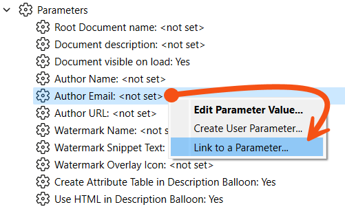
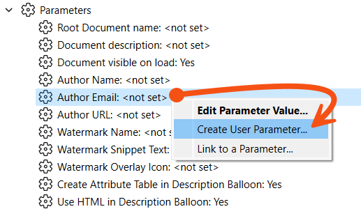
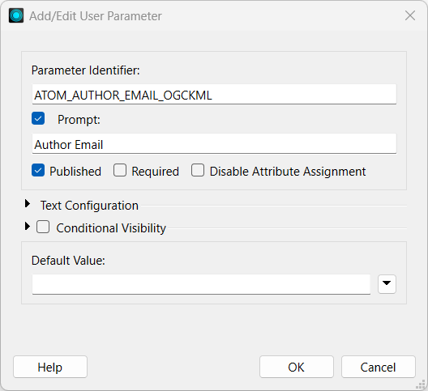
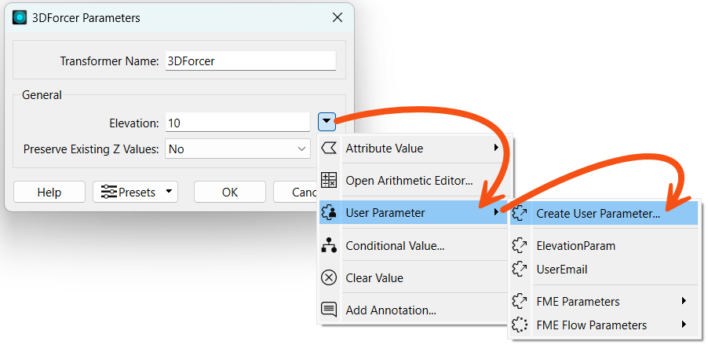
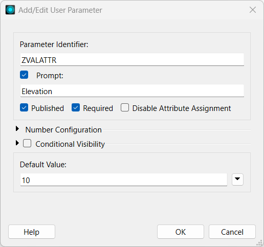
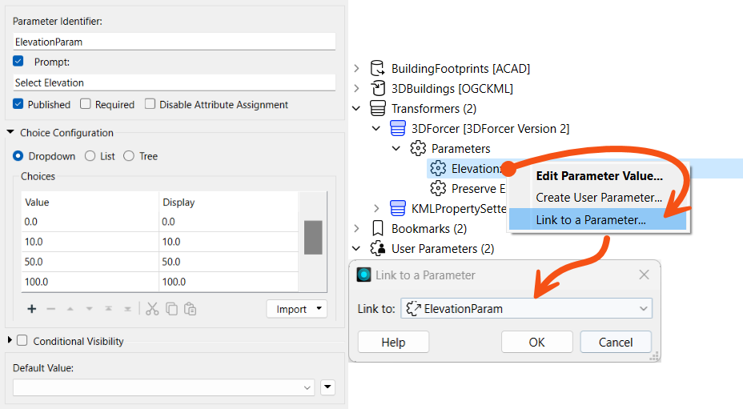

After completing this lesson, you’ll be able to:
As we know, FME parameters control FME directly, and user parameters allow user input.
Sometimes, a workspace author needs the user's input to apply directly to an FME parameter, which is done by linking the user parameter to the FME parameter.
For example, an FME author has a workspace that writes to a KML dataset. The "Author Email" parameter adds the user's email as metadata.
The workspace author wishes for the end-user to enter their email address but doesn't want them to have to search for that parameter.
So, they create a user parameter:
Their user parameter allows the user to enter a value, but the workspace does nothing with that value. To do so, the user parameter must be linked to the FME parameter.
The author does this by right-clicking the FME parameter and choosing Link to a Parameter:

Then, they select their user parameter to link to.
Alternatively, they can do the reverse; right-click the User parameter and choose Apply To... However, there are usually more FME parameters than user parameters, so the 'Link' method is usually easier and quicker.
Because the FME parameter is now linked to the user parameter, whatever value the user sets for that user parameter is applied directly to the FME Parameter (Author Email):

If the author changes their mind, there is always an option to unlink the user parameter and return the FME parameter to direct author control. To do that, right-click the FME parameter and choose Unlink from the User Parameter.
In the previous example, a user parameter was created separately and linked to the FME parameter. However, there is a shortcut to this, where creating and linking a parameter simultaneously is possible.
In the Navigator window, right-click an existing FME parameter and choose the option to Create User Parameter...:

This opens the Add/Edit User Parameter dialog as before, but this time, the definition to create a parameter is filled in automatically. The parameter type is fixed (Text, in this case) and is a data type accepted by the FME parameter:

Click OK, and the user parameter is created and automatically linked to the FME parameter.
You can do the same one-step action inside a transformer dialog, too, like so:

Here, the workspace author creates a user parameter linked to the Elevation FME transformer parameter in a 3DForcer transformer.
You might wonder why you would link a user parameter separately or why we showed that process first. Both methods have advantages and disadvantages.
Creating a linked FME parameter directly has an obvious advantage because it is a single-step process. You create and link the user parameter with a single action.
Additionally, a user parameter created from an FME parameter is automatically given the correct data type.

For example, in the 3DForcer, elevation requires a floating point number; any user parameter created from this FME parameter will automatically be of type float without the option to change it.
1. Inability to Set Data Type
The inability to set data type can, however, be a limitation.
For example, what if the author wanted to list permitted elevations for the 3DForcer: 0.0, 10.0, 50.0, etc.? This could not be achieved by creating the user parameter directly because it would create a Float parameter when a Choice is required.
So, the author should create a choice user parameter separately and then link it to the FME parameter:

Of course, the author needs to take care that the values provided by the user parameter are of a type that matches those expected by the FME parameter. FME cannot parse all input from a user parameter (especially Choice parameters) to ensure it matches its linked FME parameter.
2. Persistence
Another disadvantage is the persistence of the user parameter.
It's like this: if a user parameter is created directly from an FME parameter on a transformer, it is forever tied to it. If you delete the transformer, FME will also delete the user parameter.
However, if you create a user parameter separately and link it to a transformer’s FME parameter, it will remain in the workspace even if you delete the transformer.
This could be seen as an advantage or disadvantage, depending on whether you would like this behavior!
3. No Control Over Attribute Assignment
Finally, a user parameter created directly has no control over attribute assignment (more on that later in this course).
In some scenarios, FME creates and links user parameters automatically without any manual action by the workspace author.
For example, whenever you add a reader or writer to a workspace (or FME adds them when using Generate Workspace), FME automatically turns their source/destination dataset parameters into user parameters.
Below, you can see a Source MapInfo TAB parameter that FME automatically linked to a user parameter called SourceDataset_MITAB:

There is also a parameter for DestDataset_GML that maps to the output GML parameter.
Automatic linking occurs for parameters important to the end-user that appear in nearly all workspaces. This includes readers and writers, plus, for example, the Feature Types to Read parameter.